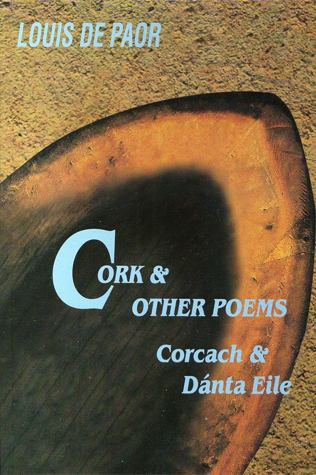

Cork & Other Poems / Corcach agus Dánta Eiles
Louis de Paor

Description
Louis de Paor was born in Cork, or Corcach, in 1961. The name means literally ‘a marshy place’ and is the origin of the term ‘bog Irish’. His subtle poems deny the insult of that term. Cork & Other Poems starts with a dockland farewell set in drenching rain. But it is leavetaking seen in recollection: he remembers his departure from Ireland and family. The turmoil of the storm is internal. And it introduces the theme of his book: the powerful impact of his homecoming and the echo of his Australian years. The Gaelic only version, released in Ireland, won the Seán Ó Riordáin Prize, the premier prize for Irish poetry. This volume also won the Lawrence O’Shaughnessy poetry prize in the USA in 2000. If you ’ ve read Louis de Paor’s poems only once or twice, then I suggest you’ve missed them. It is through careful excavation that the secrets of their complex imagery unfold and their hidden treasures are laid bare. Louis de Paor is one of the most consistently challenging voices in Irish poetry today. Michael Davitt
Description
Louis de Paor was born in Cork, or Corcach, in 1961. The name means literally ‘a marshy place’ and is the origin of the term ‘bog Irish’. His subtle poems deny the insult of that term. Cork & Other Poems starts with a dockland farewell set in drenching rain. But it is leavetaking seen in recollection: he remembers his departure from Ireland and family. The turmoil of the storm is internal. And it introduces the theme of his book: the powerful impact of his homecoming and the echo of his Australian years. The Gaelic only version, released in Ireland, won the Seán Ó Riordáin Prize, the premier prize for Irish poetry. This volume also won the Lawrence O’Shaughnessy poetry prize in the USA in 2000. If you ’ ve read Louis de Paor’s poems only once or twice, then I suggest you’ve missed them. It is through careful excavation that the secrets of their complex imagery unfold and their hidden treasures are laid bare. Louis de Paor is one of the most consistently challenging voices in Irish poetry today. Michael Davitt
{kind=link}
Information
| ISBN | 1876044292 |
| Release | 1999 |
| Pages | 94 |
About the Author
Reviews
Duncan Richardson, Social Alternatives
A Breath of Fresh Air! Duncan Richardson Social Alternatives , Vol. 20 No. 1, January 2001 de Paor is a breath of fresh air in contemporary poetry, to borrow a tired cliché but his honesty and unpretentiousness demand a metaphor of that kind. For lovers of myth and legend too, his poems are exemplars of how to use such themes without beating readers over the head with your erudition. There are two pages of notes on Irish myth and legend at the end of this book, yet this comes as a surprise, so skilfully are the images and references worked in. de Paor, who draws on experiences in Ireland and Australia for the poems in this collection, has a poetic voice that takes a participant-observer stance, not the self-righteous or heroic tone so common among writers who deal with traumatic subjects. When he deals with Ireland’s recent history of conflict, his images stem from the cycle of generations, migration and the violent scenes so familiar from TV yet he does not preach or lapse into mawkishness. Instead, he offers insight into the conflicting desires in the human heart, virtue versus fear, and the difficulty of living up to ideals whatever level of action they may be applied to. Readers of Gaelic will get double value from this book as each poem appears in the two languages. The impact of his work depends on the development within the poem, so short quotes cannot do them justice. The following poem though shows how de Paor lets the world speak for itself, through deft handling of a scene. Heredity: It won’t come out, / the blood that goes through / me from my mother’s side / leaving one snarled tooth / in the roof of my mouth, / an itching poet in my head / where demented ideas / scratch in unseasonal heat, / an ogham stone / shouting me down / with its unintelligible alphabet. // I put my thumb / under the tooth of knowledge / and the stone speaks its mind / from the underworld of my thoughts: / - You’re only a blow-in, / like all that belong to you; / hard words like grains of sand / in the corner of an eye / shut tight as an oyster. // When a blade of light / prises it open / there’s a tooth askew / in my son’s mouth, / bright as a pearl / in his perfectly / crooked smile.
The Sunday Tasmanian Review
Fine collection of haunting love lyrics Tim Thorne The Sunday Tasmanian 26 March 2000 Louis de Paor has produced yet another excellent collection of bilingual poems. It is gratifying that Black Pepper has enough faith in his appeal to Australian readers, despite the fact that it is more than three years since he last lived in this country, to bring this book out. de Paor’s reputation in Ireland is firm and since his return there he has edited an anthology of Irish poetry which includes work in English and Irish. He invariably creates his own poetry in Irish, then translates it into English. Having the Irish text on pages facing the English is a constant reminder of this and must make the vast majority of his Australian readers, who cannot pronounce, let alone understand the language, long to hear those pages come to life. Those of us who have been privileged to hear de Paor read are aware of the magic that his presence and his voice create in either language. In this collection there are occasional references to Australia but, as the title implies, most of the pieces are set in his native city of Cork and in other parts of Ireland. There is the wonderful and poignant ‘Rory’, about a musician who now plays ‘ where Robert Johnson plays broken / riffs on the boards of a coffin ’ . It encapsulates the dilemma of the exile returning from the other side of the world after a long absence, while at the same time extolling the glory of music which transcends narrow cultural boundaries as it transcends nostalgia and even grief. There is an element of wry wit apparent in this book which was not such a feature of de Paor’s earlier work. It is evident in lines like this from Harris Tweed: 'In the month of July / in Inverary the grouse / take to the sky on teatowels.' These lines follow a list of archetypal images of the smells of traditional Ireland evoked by a tweed jacket bought ‘ for a song / from the Salvation Army / in Wonthaggi ’ . But it is the haunting love lyrics, the celebrations of the natural world and the meditations on domestic life that form the core of this fine collection. Louis de Paor has the gift of writing with crystal clarity while presenting challenging complexities. You can delve into deeper and deeper layers of meaning or just enjoy the brilliant surface of his poems, as the mood takes you. Either way, this is a most rewarding book.
Overland Review
‘Blow, wind, blow...’: new poetry Cork & Other Poems Kerry Leves Overland , No. 157, 1999 The poet’s English translations accompany his Gaelic originals; reading aloud is advisable. Each bit of the ordinary - stockings on a washing line, a pregnant woman’s back and belly, clocks, cars, a tweed jacket still redolent of the barn-floor love-making it once eased; an eviction at once achingly particular and deadpan commonplace, the lot of any poor person anywhere - is chanted, caressed, growled, rasped irifo life. A woman is shot mistakenly by a sniper: a child on the way home from mass sees it happen, but there’s no easy lament; instead, the painstakingly ingenuous narration, with its dogged rhythms, seems to follow the entry of this experience into the child’s nervous system. The intensity may have to do with the poet’s return to Ireland after ten years in Australia; de Paor’s word-music mixes rain, earth, light, the body’s alertness. His poetry makes physical inroads, and searches out generosities on its shifting Catholic-animist ground.
Antipodes (United States)
Gaelic Poetry... Nicholas Birns Antipodes (United States) , Vol. 14, No. 2, December 2000 Louis de Paor’s Cork & Other Poems ( Corcach agus Dánta Eile ), published by Black Pepper Press, seems at first but an intriguing cultural phenomenon. de Paor (born 1961) is an Irish Gaelic poet who resided for a time in Australia. Here he publishes a bilingual edition of his poems with an Australian press. But de Paor’s poems themselves are startlingly good, confirmably so in English, and coming through quite well in Gaelic even for the reader who does not know much of it (though Gaelic, presumably one of the “European languages” of the notorious dictation test for prospective migrants, is an easy one to crib). de Paor’s freshness of diction, even, and especially, when using the most transparent language, is stunning. “...and again today/ the light is soft as butter/ on bread fresh from the oven,/ you could put it in your mouth/ and let it melt/ like holy communion/ on your tongue/ or place it in a jar/ in the medicine box/ a sovereign remedy/ for the heart.” I will give the Gaelic for the last two lines as the syntax falls into place if you realize, not a hard task, that chroi = heart. “iochshláinte/a chneasóidh do chroi”. This is poetry one can read, and re-read, as poetry, not as rhetoric or even as “verse.” The language is unbelievably simple, yet possesses an equally unbelievable amount of depth. The poems themselves have little to do with Australia, and de Paor, it seems, is no longer resident there. But it shows what Australian literature can be in a global sense. It can also serve as a clearinghouse for all sorts of possibilities in global literature - as if Australia can because of its own “distance” shake us into confrontation with reawakened language such as that de Paor gives us.
Tain Review
De Poar: award-winning poems Chris Watson (past secretary, Cumann Gaeilge na hAstráile/Irish Language Association of Australia) T á in , September 2000 Louis de Paor, who was born in Cork, lived at Melbourne’s Coburg for about ten years before returning to Ireland in 1996 to live at Oughterard, County Galway. Chris Watson, past secretary of Cumann Gaeilge na hAstráile/lrish Language Association of Australia, reviews de Paor’s new book, Cork & Other Poems: Corcach agus Dánta Eile. Louis de Paor, fluent in both Irish and English, is a self-translator who freely changes idioms that work well only in one language, so that both versions of poems in this recent bilingual collection read as strong poems in their own right. Readers of the edition published in Ireland are given less assistance: for them, it’s Irish or nothing. The poems based on his departure for Australia and return to Ireland explore memories and come to terms with the relationships of the family’s past. ‘Gaol Cross’ recalls that in flying out from Shannon Airport, he ‘crossed over/ in my father’s footsteps,’ and he sees his grandmother, like Mary at the cross, as a symbol of bereaved motherhood: ‘When I looked back across the water / the last light was dying / in my grandmother’s eyes / as she stood like a statue in the dark / looking after us from the foot of the Cross.’ ‘Silk of the Kine / Sioda na mBó’ takes its title, as a note reminds us, from the old song An Droimeann donn Dílis. ‘When flight number EI 32 / turned its dripping snout / for home, slow / as the white-backed heifer / that took one last look / at those faraway hills...’ Return from abroad brings mixed feelings. He remembers his grandfather’s cow whose own last journey strangely resembles his own return home: ‘before climbing the ramp / of the old brown truck / to the slaughterhouse.’ Even wryer and more enigmatic is the Irish version of the ending, alluding to the opening of the old song: ‘sara gcuach isteach / i dtrucail donn / dílis an tseamlais (the faithful brown slaughterhouse truck).’ In the later part of the book, the family perspective shifts, with emphasis on being a husband, and father to a new generation. Several poems are about his response to his wife’s pregnancies. I was particularly struck by those where he speaks as a father of young children. In ‘Notice/Neamhaire’, his daughter asks him to watch her dance on the kitchen table. ‘“Jesus Christ,” I say, “Watch yourself,”’ corresponding to the untranslatable exclamation, “A dhiabail álainn / ...tabhair aire” gives the English poem another ‘watch’ usage in a poem with several references to cutting and watching. At the poem’s end, ‘She’s fallen, her face streaming / like blood from a cut’ and calls on him to see her in her distress. However, ‘When I take off / the blindfold / she cuts me dead.’ The Irish version is starker in its use of the watching and cutting imagery: ‘Nuair a bhainim / an púicín dem amharc / tá faobhar ar a súil / dom fhéachant go feirc. (When I take / the blindfold from my sight /there’s a blade from her eye / watching me to the hilt.)’ Other poems recall incidents and characters outside the family, often with wit, as in the words of the woman who has to leave her dwelling: ‘I wouldn’t give him the itch / for fear he’d have / pleasure scratching it.’ In ‘Congregation’, the noise of a group of disturbed swans suddenly resembles the more ominous noises of those who expressed ‘righteous indignation... in the kangaroo court / outside the Cathedral’ over ecumenical actions by Mary McAleese. Like this one, many poems, even when not overtly political, are conscious of the important public and historical issues surrounding the more familial concerns. The book is attractive. The cover by Gail Hannah, has a beautiful overhead picture of a curragh on sand. Sorcha When she talks to trees plums and apples land in her lap, fruit of the vine and half-blind strawberries give in to her giving hands. Cats and dogs know her for one of their own, their coats speak in velvet tongues to her attentive cheeks. She goes out like a light when the dark comes in and stays out till the sun climbs from the snare of her buckled hair as morning picks its way through the locks on her forehead, the slip-knots of her undark name. Má labhrann sí le crann péacann úll nó pluma ina glaic, cuardaíonn an fhineamhain is an sú talún béal a baise gan chraos. Aithníonn cait is coileáin aon dá gcineál labhrann a gcotai fionnaidh briathra sróil lena grua biorchluasach. Téann sí as nuair a ligtear an doircheacht isteach is ní thagann ar ais nó go scaoiltear an mhaidin as gaiste búclaí a foilt, éiríonn an ghrian ionam as dola reatha a hainm nach dorcha. Author’s note: Sorcha is a girl’s name, meaning brightness, the opposite of Dorcha, darkness. Photo: Sorcha de Paor at Korweignguboora, 1996
Sidewalk Review
Raining on Mythology’s Parade Cork & Other Poems Peter Skrzynecki Sidewalk , No. 6, July 2000 (pgs 46-48) [Text not yet available]
Ulitarra Review
The Long and the Short of It: 24 Writers Cork & Other Poems Michael Sharkey Ulitarra , No. 17/18, July 2000 (pgs 222-232) [Text not yet available]
Island Review
A Summer Feast Cork & Other Poems Ian McBryde Island , No. 80/81, Spring/Summer 1999 - 2000 (pgs 203-208) [Text not yet available]
Citation for 4th Lawrence M. O’Shaughnessy Prize for Poetry
Cork & Other Poems - Winner of Fourth Lawrence M. O’Shaughnessy Prize for Poetry Citation 29 February 2000 Here on Archbishop John Ireland’s campus halfaway round the globe from County Galway, we gather not for the customary March observances of things Irish--no parading or pub-crawling tonight—but for a feast—a feast both literal and literary. We gather in honour of the Irish poet Louis de Paor, the language of his originality, and particularly his seventh collection of poems Cork & Other Poems . Published just last year, Cork & Other Poems is the third of de Paor’s bilingual books after Sentences in Earth and Stone of 1996 and Speckled Weather of 1993. Each of those collections offers de Paor’s own English--what he terms his “forgery”—of the original Gaelic poem. Each collection gives a welcome to English, and not a farewell to it. Because each of his lines pronounces by turns de Paor’s devotion to the familial, the intimate, and the sum of Irish heritance, each reader receives what such other poets in Modern Irish as Máire Mhac an tSaoi or the late Michéal hAirtnéide have so generously passed on to those willing to listen. de Paor’s poem “Gaeilgeoiri” raised that question early on: Cad leis go rabhamar ag súil? Go mbeadh tincéiri chun lóin in Áras an Uachtaráin? Go n-éistfí linn? *** What did we expect? That tinkers could drop in for a spot of lunch at Aras an Uachtarain? That people would actually listen to us? The answer, this night, is a plain “Yes.” Remarkably, de Paor’s Irish and his English forgeries have come to us in St Paul and London—or Boston and even Dublin—all the way from Australia. Speckled Weather / Aimsir Bhreicneach came first, marking off from the outside de Paor’s maturity in 1993. This is hardly an accident. It comes, of course, from an essential Irish circumstance—the necessity to emigrate. Goban Cre is Cloch /Sentences of Earth and Stone voices that diasporic heritage in a long poem titled “Oileán na Marbh” or “The Island of the Dead.” Whether in English or Irish, those lines keep all of de Paor’s later poems mindful of the penitential durance of emigration, and not solely because Australia served as a British penal colony for decades. Visiting the plots of those prisoners, de Paor declares: Better to wear a cowl to hide the shame of man made nothing, to cover your face... *** Ba chuíúla dar liom cochall a chaitheamh gan uirísleacht an duine... The hallmark qualities of Speckled Weather and Sentences of Earth and Stone underscore the real presence of every line in Cork & Other Poem s. De Paor’s title reminds us that he received the Sean O Riordain prize 1988 and then the 1992 Oireachtas. de Paor was bom in Cork and educated there. His study of the Galway writer Mairtin Ui Cadhain and his anthology Leabhar Sheain Ui Thuma pay tribute to the poet and scholar Séan Ó Tuama. Like the poets Nuala Ní Dhomhnaill or Thomas McCarthy, de Paor comes of a remarkable generation tutored by Seán Lucy, John Montague and Ó Tuama himself at University College, Cork. In Cork & Other Poems , local and national events speak bitterly and passionately. Early and Bardic lines pose their sweet and sour against our contemporary lives. Most importantly, though, de Paor keeps to simple freedom with metaphor that suddenly and rewardingly complicate a living moment. That is why the father-and-son scene, a family scene, of “Heredity/ Oidhreacht” surprises us in its closure. ...ta fíacail ar sceabha i ndrad mo mhic gleas chomh hard le niamh an phearla ar a ghaire neamhfhoirfe gan teimheal. *** ...there’s a tooth askew in my son’s mouth, bright as a a pearl in his perfectly crooked smile. One of the traditional tasks of the poet’s language is to skew our perceptions and expectations, to make our straight ways of understanding crooked, to set our ordinary feelings ar sceabha . Whether forgeries in English or playfully forged in Irish, Louis de Paor’s poems renew the powers of Irish to set askew the presumptions and usual preferences of English as we find it in Ireland and Britain, in the Americas, in Australia. It is in recognition of those powers that we celebrate the accomplishment of Louis de Paor by awarding him the fourth Lawrence M. O’Shaughnessy Prize for Poetry.